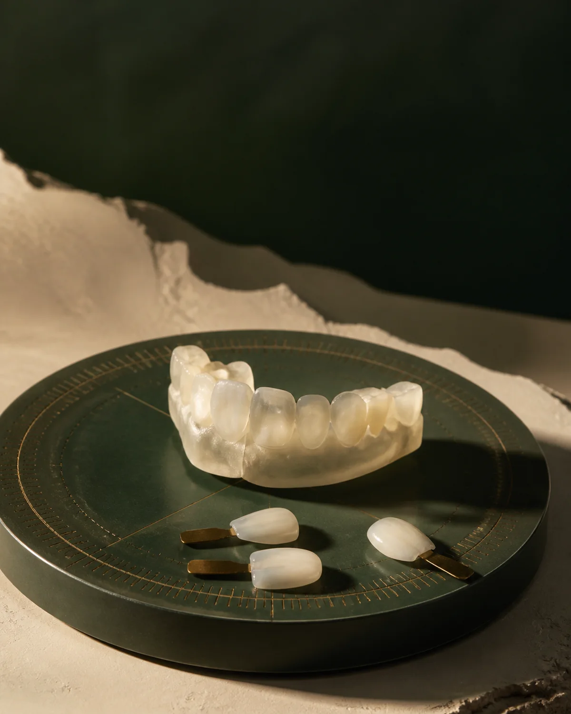
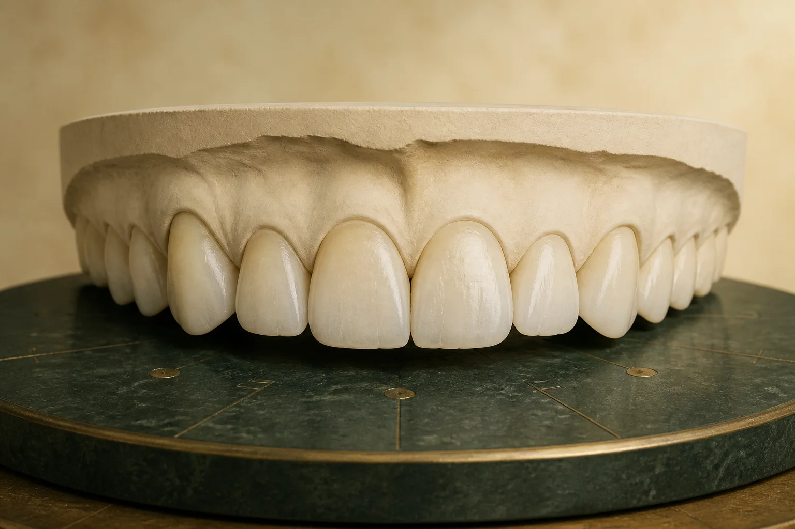
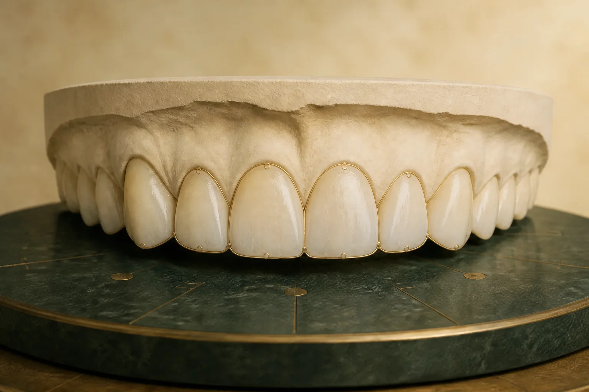

Dentistry,considered.
A fictional Beirut dental concept where cosmetic and restorative choices are examined in context—not sold as a template.
Discuss a similar website
Spline concept demonstration
No appointment is created
No appointment is created

Material / enamel
Examine before deciding
Digital smile designImplant dentistryNatural ceramic veneersGentle whitening
Digital smile designImplant dentistryNatural ceramic veneersGentle whitening
The treatment edit · 04
Not more dentistry. Better decisions.
Every plan begins with what to preserve. Digital precision, balanced by the restraint to know when less is more.
→
Ceramic veneers
Implant care
Whitening
03 · Treatment records
Compare with context.
Two generated dental study models demonstrate comparison without patient photography, consent risk, or a promised clinical outcome.


Generated models · no patient dataIllustrative planning view · not a result
Consent-safe
Generated models replace patient photographs.
User-controlled
Drag, tap, or use the keyboard to compare.
Context intact
No patient, procedure, visit count, or outcome is implied.
Understand the options before choosing a direction.
This concept shows how a dental website can turn consultation information into a clear sequence—without inventing a clinician, credential, patient, or result.
Discuss this concept- First
Name the concern
Begin with the visitor’s question, not a treatment catalogue.
- Then
Compare the options
Show trade-offs, materials, and planning views together.
- Finally
Choose the next step
Make the contact path clear without implying a booking.
What the experience proves.
Interface evidence, never testimonials.
A tailored dental website starts with the workflow
Build your
version.
Contact Spline to discuss a real clinic’s services, patient journey, booking tools, consent needs, and visual identity.
Contact Spline on WhatsAppFictional conceptNo clinical booking